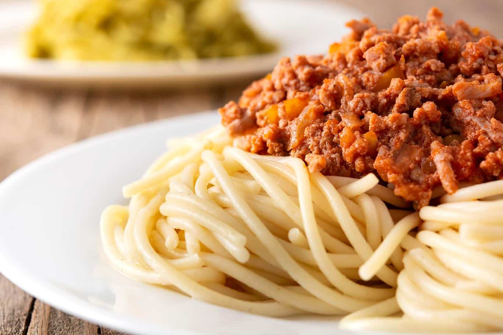

Ingredientes
- 200 g de espagueti
- 250 g de carne molida
- 1 taza de salsa de tomate
- ½ cebolla picada
- 1 diente de ajo picado
- Sal y pimienta al gusto
- Queso rallado al gusto (opcional)
Preparación
- Hervir el espagueti en agua con sal según las instrucciones del paquete. Escurrir y reservar.
- En una sartén grande, calentar un poco de aceite y sofreír la cebolla y el ajo hasta que estén dorados.
- Agregar la carne molida y cocinar hasta que pierda el color rosado, mezclando bien.
- Incorporar la salsa de tomate y sazonar con sal y pimienta. Cocinar a fuego bajo 10-15 minutos.
- Mezclar la salsa con el espagueti cocido.
- Servir caliente y espolvorear queso rallado si se desea.
